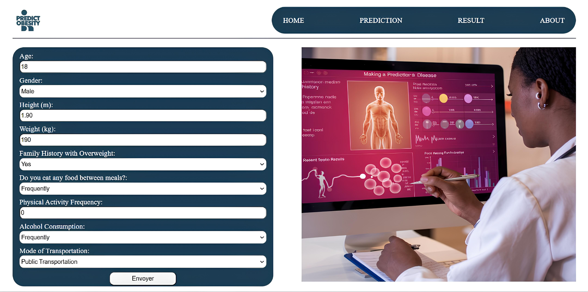
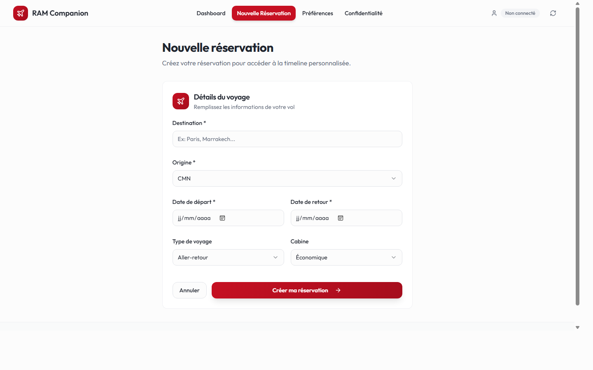

Sélection de travaux académiques et personnels. Chaque projet suit une
démarche d'ingénierie rigoureuse avec documentation des approches,
résultats et limites identifiées.
Data Science2026Équipe de 2
Analyse de la sécurité alimentaire en Afrique (Power BI)
La croissance démographique en Afrique augmente la pression sur les systèmes
alimentaires. Ce projet vise à comparer, pays par pays, l'évolution de la
production agricole, de la population et des indicateurs de sécurité
alimentaire afin d'identifier les zones prioritaires.
Données et périmètre
Analyse construite à partir de données FAOSTAT (FAO) sur la période
2000-2013, filtrées sur les pays africains.
Tables exploitées : Food Security, Food Balance Sheets, Production, Population
Intégration d'une dimension pays (`DimCountry_Africa`) pour fiabiliser les jointures
Nettoyage des valeurs manquantes/aberrantes et harmonisation des unités
Approche analytique
Méthodologie CRISP-DM appliquée de bout en bout (compréhension métier, préparation, modélisation, évaluation)
Modèle en étoile avec tables de faits + table de dimension géographique
Mesures DAX pour les KPI (moyenne, min, max, production par habitant, nombre de pays inclus)
Analyse comparative inter-pays avec filtres dynamiques (année, indicateur, unité)
Tableau de bord Power BI
Le livrable final regroupe 4 pages interactives :
Food Security, Production, Food Balance Sheets et Determinants.
Courbes temporelles pour suivre les tendances 2000-2013
Classements pays (Top/Bottom) sur les indicateurs clés
Cartes géographiques pour visualiser les disparités régionales
Nuage de points "production par habitant vs sécurité alimentaire"
Technologies utilisées
Power BIDAXPower QueryFAOSTATCRISP-DM
Résultats clés
Amélioration globale des indicateurs alimentaires sur la période, mais progression modérée
Forte hétérogénéité entre pays, avec des écarts marqués sur les indicateurs de sécurité alimentaire
Lien positif entre production par habitant et sécurité alimentaire, sans relation parfaitement linéaire
Mise en évidence de l'importance de normaliser les mesures (totaux vs par habitant)
L'obésité constitue un enjeu de santé publique majeur. L'objectif du projet
était de prédire automatiquement le niveau d'obésité d'un individu à partir
de ses habitudes alimentaires, son activité physique et quelques variables
anthropométriques.
Contexte
Projet réalisé durant la Coding Week, en équipe de 5, avec une chaîne complète :
exploration des données, modélisation, comparaison des algorithmes et intégration
dans une application web Django pour l'inférence.
Aperçu de l'interface

Interface de saisie utilisée pour estimer le niveau d'obésité.
Données utilisées
Jeu de données UCI "Estimation of obesity levels based on eating habits and physical condition"
(id 544), avec 2111 lignes et 17 variables.
La cible est le niveau d'obésité (7 classes).
Variables : âge, taille, poids, activité physique, habitudes alimentaires, transport
Cible : NObeyesdad (de Insufficient_Weight à Obesity_Type_III)
Prétraitement : nettoyage, encodage, normalisation et rééquilibrage avec SMOTE
Le parcours voyageur est souvent fragmenté entre réservation, suivi du trajet
et recommandations sur place. Ce projet vise à centraliser ces besoins dans
une application web unique, orientée expérience utilisateur.
Projet réalisé en partenariat avec la RAM dans le cadre du projet Innovation
à l'École Centrale Casablanca.
Architecture full-stack
Front-end : React + TypeScript, navigation avec React Router et gestion d'état distant via React Query
Back-end : API FastAPI versionnée (`/api/v1`) avec modules métier séparés (auth, bookings, my-trips, destinations, recommendations, privacy, preferences, feedback)
Données : SQLAlchemy + migrations Alembic, base SQLite en local et architecture compatible PostgreSQL
Extensibilité : couche provider pour les recommandations destination (mode mock et intégration API externe)
Flux utilisateur couvert
Accueil avec vérification de l'état API et initialisation de session invitée
Création d'une réservation (destination, dates, cabine, type de trajet)
Consultation du tableau de bord et de la timeline personnalisée du voyage
Recommandations contextuelles avant et après réservation
Boucle d'amélioration via feedback utilisateur et préférences de voyage
Fonctionnalités principales
Session invitée automatique avec token JWT
Authentification légère + renouvellement de token côté front
Création de réservation et suivi de la timeline de voyage
Recommandations destination et arrivée selon ville/catégorie/budget
Gestion des préférences utilisateur et consentement confidentialité
Collecte de feedback utilisateur pour améliorer les recommandations
Documentation technique (API)
Healthcheck : `/api/v1/health` pour superviser la disponibilité
Authentification : `/api/v1/auth/guest` puis `/api/v1/auth/me`
Réservations : `/api/v1/bookings/` (création et consultation)
Timeline : `/api/v1/my-trips/timeline` et `/api/v1/my-trips/{booking_id}/timeline`
Tableau de bord voyageur avec accès rapide aux actions clés.

Formulaire de création d'une nouvelle réservation.
Résultat
MVP full-stack fonctionnel avec parcours utilisateur cohérent, API documentée
automatiquement (`/docs`) et base technique prête pour une montée en charge
progressive (intégration fournisseur réel, scoring avancé, analytics produit).
Les malwares constituent une menace croissante pour les systèmes d'information.
Ce projet vise à explorer et maîtriser les différentes techniques d'analyse
utilisées par les professionnels de la cybersécurité pour détecter, comprendre
et neutraliser les logiciels malveillants.
Contexte
Projet réalisé dans le cadre du cours de cybersécurité, avec pour objectif
d'acquérir une compréhension pratique des méthodes d'analyse de malware,
de l'analyse statique à l'analyse dynamique en environnement contrôlé.
Approche technique
Analyse statique : extraction des métadonnées, strings, imports/exports,
analyse des headers PE et identification des signatures connues
Analyse dynamique : exécution en sandbox (environnement isolé),
monitoring des appels système, analyse du trafic réseau et des modifications fichiers/registre
Reverse engineering : désassemblage et décompilation pour comprendre
la logique du malware et identifier les indicateurs de compromission (IoC)
Classification : identification du type de malware (ransomware, trojan,
spyware, etc.) et de ses capacités